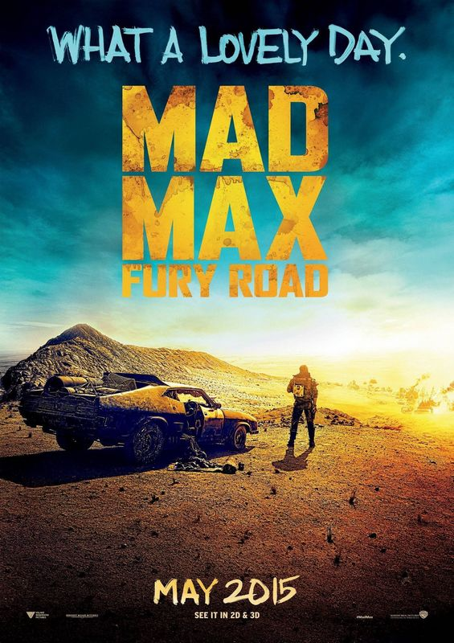

Mad Max Fury Road (© Warner Bros.)
Termin: 14.05.2015
Genre: Action Sci Fi
Nationalität: Australien USA
Homepage: http://www.madmaxmovie.com/
Ein bekanntes und doch nicht bekanntes Szenario. Eine verkommene Wüstenlandschaft, wo die Menschheit nichts Gutes mehr sieht und fast jeder bereit ist, einen anderen Menschen für das Überlebensnotwendige zu opfern. Max (Tom Hardy) sucht hier seinen Frieden. Eigentlich ist er ein Mann der Tat und weniger Worte aber nach dem Verlust seiner Frau und seines Kindes wollte er nur noch weg. Die elitäre Furiosa (Charlize Theron) glaubt, dass sie ihr Überleben sichern kann, wenn sie sich nur aus der Wüste bis in ihre Heimat kämpfen kann. Beide leben dort als Außenseiter.
Kurz nach dem Max entschieden hat, dass er wohl alleine besser dran sein könnte, trifft er auf eine ganze Meute in einem Kampfwagen. Am Steuer sitzt – natürlich – Furiosa. Sie sind alle auf der Flucht vor dem Warlord Immortan Joe (Hugh Keays-Byrne). Der stellt ihnen nun nach. Ein staubiger und temporeicher Straßenkrieg entbrennt in der Konfrontation mit den Verfolgern.